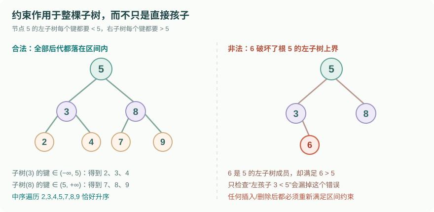
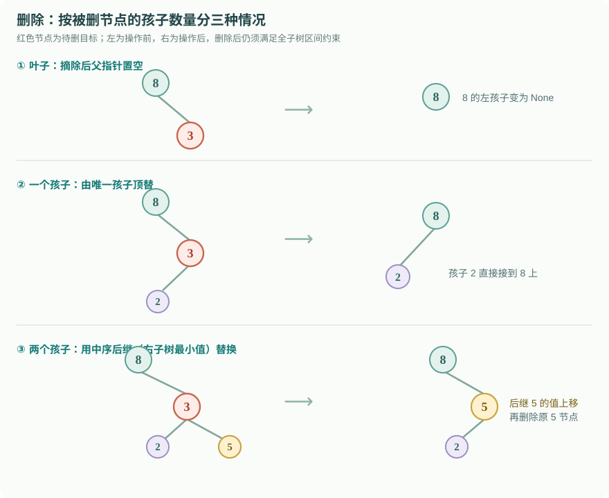
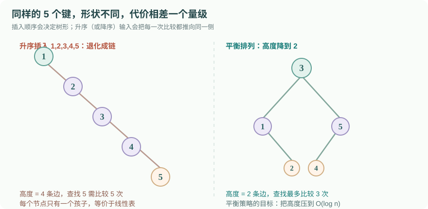

二叉搜索树：让二叉树可排序地搜索
普通二叉树不承诺任何键序。给每个节点加上一条全子树区间约束后，查找、插入与删除都能沿单一路径进行；但这条优势依赖树形，升序输入会让它退化成链。
为什么有序容器需要比数组更好的结构？
在一个已排序数组里，二分查找用约 O(log n) 次比较定位一个键，但维持有序的代价很高：在中间插入或删除一个元素要搬移大量槽位，是 O(n)。单链表插入删除只需改少量引用，却不能按位置跳到中间，查找同样退化为 O(n)。
于是有一个自然的问题：能不能同时得到“每次比较都把候选范围缩小一半”和“只改动局部就能插入删除”？二叉搜索树（BST）把二分查找的决策从数组的“中位下标”搬到树的“节点引用”上：每次比较都把候选范围收窄到一棵子树。
但要小心：普通二叉树并不自带有序性。上一章例子里的左孩子 2、右孩子 6 只是摆放方式。要让“往左走 / 往右走”有确定含义，需要额外加一条约束，这就是下一节的区间不变量。
区间不变量：整棵左子树都要小于根
二叉搜索树是一棵二叉树，并满足：对任意节点 v，v 左子树中所有节点的键都小于 v 的键，右子树中所有节点的键都大于 v 的键，且左右子树各自也递归满足。约束说的是“整棵子树”，而不是“直接孩子”。

换一种说法：从根出发，每个节点的取值被沿途祖先夹在一个开区间里。先向左走到 L，上界就收紧为 L；再向右走到 R，下界收紧为 R。查找、插入和删除都必须保持这个区间关系。
查找：每一步排除一棵子树
从根开始，把目标键 k 与当前节点的键比较：相等则命中；k 更小就进入左子树；k 更大就进入右子树；走到空引用则说明不存在。每走一步，根据区间不变量就排除了一整棵子树，这正是二分思想的体现。
def search(root, target):
node = root
while node is not None and node.value != target:
node = node.left if target < node.value else node.right
return node
assert search(root, 4).value == 4 # 5 -> 3 -> 4
assert search(root, 6) is None # 5 -> 8 -> 7 -> 空比较次数等于从根到命中节点的路径长度加一（等价于该节点的深度加一）。最好情况目标正好是根，只需 1 次比较；最坏情况走到最深的叶或空引用，需要 h+1 次，其中 h 是树高（按边数）。所以查找代价是 O(h)，而不是固定的 O(log n)。
沿比较路径查找一个键
结构固定为图 1 左树：根 5，左子树 3(2,4)，右子树 8(7,9)。选择目标键，按左 / 右决策列出比较路径。
插入：沿着失败的查找路径落脚
插入不上单独设计路径：先像查找一样从根走到空引用，新节点就挂在这里。因为新键沿途已经与每个祖先比较过，所以挂上去后区间不变量仍然成立。递归写法最简洁：
def insert(root, value):
if root is None:
return Node(value)
if value < root.value:
root.left = insert(root.left, value)
elif value > root.value:
root.right = insert(root.right, value)
return root如果 value 与某个节点相等，上面的 elif 两个分支都不进入，相当于忽略重复键；这使中序遍历保持严格递增。实际系统有时需要保留重复：可以在节点上记一个计数，或约定重复键总是落到某一侧，但这一约定必须写进不变量，否则校验和删除都会产生歧义。
删除：按孩子数量分三种情况
删除比查找多了一层麻烦：拿掉一个节点后，它的孩子需要有人接管，而且接管后仍要满足全子树区间约束。按被删节点的孩子数量分三种：

def delete(root, value):
if root is None:
return None
if value < root.value:
root.left = delete(root.left, value)
elif value > root.value:
root.right = delete(root.right, value)
else:
if root.left is None:
return root.right # 叶子，或只有右孩子
if root.right is None:
return root.left # 只有左孩子
successor = root.right
while successor.left is not None:
successor = successor.left # 右子树最小键 = 中序后继
root.value = successor.value
root.right = delete(root.right, successor.value)
return root为什么选后继？因为后继是右子树里最小的键，用它顶替后，左子树的所有键仍小于它，右子树剩下的键仍大于它，区间约束不被破坏。对称地，也可以用左子树的最大键（前驱）代替。承接前两类，删除同样沿一条根到叶的路径，代价为 O(h)。
验证 BST：为什么只比较直接孩子会出错
给定一棵二叉树，判断它是否是合法 BST。利用区间不变量，可以写一个带着开区间 (low, high) 下行的递归：进入左子树时把上界收紧为当前键，进入右子树时把下界收紧为当前键。用 None 表示“无界”，就不需要伪造无穷大哨兵。
def validate(root):
def check(node, low, high):
if node is None:
return True
if low is not None and node.value <= low:
return False
if high is not None and node.value >= high:
return False
return (check(node.left, low, node.value)
and check(node.right, node.value, high))
return check(root, None, None)常见错误是只检查“左孩子 < 当前 < 右孩子”。回顾图 1 的右树：6 是 5 的左子树的成员，却满足 6 > 5。只看直接孩子的写法会误判它为合法，因为它从未把祖先的区间传下去。区间递归法的空间是递归栈的 O(h)，而“中序遍历收集数组再判断升序”需要额外的 O(n) 空间——两者时间都是 O(n)。
退化：升序输入为什么会变成链
前面所有 O(log n) 的说法都建立在“树高与 log n 同阶”上。但这并不是 BST 自动保证的。如果把 1, 2, 3, 4, 5 按升序依次插入，每次新键都大于已有全部键，查找路径总是向右到底，结果是一条高度为 4 的右链——它实际上就是链表。

这不是罕见的巧合：按时间戳、按自增主键、或从一个已经排好序的文件里读取记录，都会持续产生升序插入。因此直接使用裸 BST 储存会增长的有序数据，存在实际风险。形状还会被删除影响：图 2 的删除总是用后继顶替，长期随机删除通常仍能保持大致平衡，但并非证明。
适用边界与复杂度账本
把代价写成表时，必须把“平均 / 最坏”分别标出条件和前提，否则容易把期望当成保证：
| 操作 | 平均（随机插入顺序） | 最坏（偏斜） | 前提 |
|---|---|---|---|
查找 search | O(log n) | O(n) | 树高 h 决定代价 O(h) |
插入 insert | O(log n) | O(n) | 重复键策略已约定 |
删除 delete | O(log n) | O(n) | 后继 / 前驱选择不影响上界 |
| 中序遍历 | O(n) | O(n) | 必须访问全部 n 个节点 |
验证 validate | O(n) 时间 / O(h) 空间 | O(n) 时间 / O(n) 空间 | 递归栈随树高增长 |
使用 BST 前要回答三个问题：键是否唯一、重复键如何处理；比较器是否满足全序且一致；数据到达顺序是否可能有序。如果搜索与插入需要在最坏情况下也保持对数高度，就需要额外的自平衡机制——这正是下一章 AVL 树与红黑树要解决的问题。
带走三个判断准则
- BST 的有序性是一条全子树区间约束，中序升序只是它的推论，不能反过来当作定义。
- 查找、插入、删除都沿一条从根到叶的路径工作，代价正比于树高 h，而不是节点数 n。
- BST 的 O(log n) 以“树大致平衡”为前提；随机插入的期望成立，升序或逆序输入会退化为 O(n)。
继续学习与校验资料
- MIT 6.006：Binary Trees, Part 2 — 二叉搜索树的定义与操作
- Python 数据结构教程 — 与内置有序容器接口对照
- 上一章：树基础与遍历 — 中序、前序与层序遍历
- 下一章：平衡二叉树 — 用旋转维持高度上界